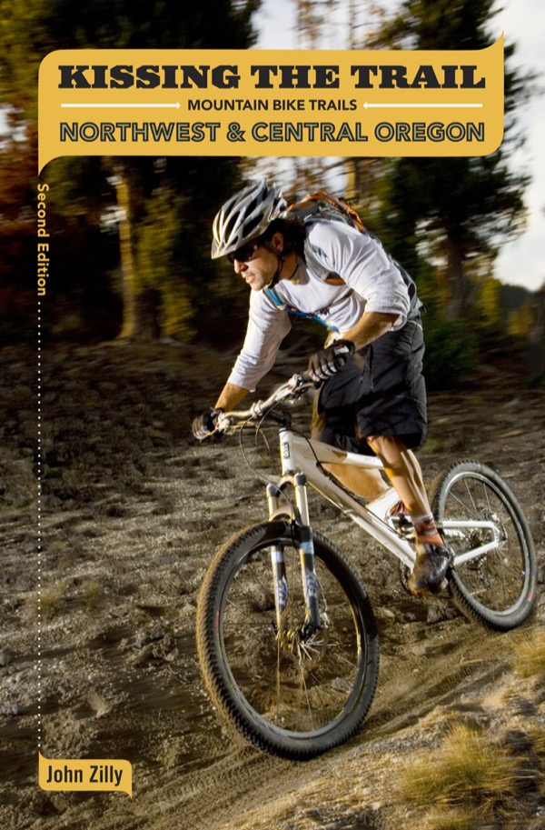

Kissing the Trail: Northwest & Central Oregon Mountain Bike Trails
- $19.95
- 352 pages, 85 maps, hundreds of photos
- ISBN: 978-1881583127
- First edition (Sasquatch Books) 1998, second edition (Adventure Press) 2008
The mountain biking in Oregon is pretty close to perfect. If that's what you're looking for, this is your book. The second edition of Kissing the Trail has 84 mountain bike rides all over Oregon—trails near Hood River, East Mount Hood, Bend, Oakridge, Eugene, and around greater Portland. It features a trails at Scappoose and two North Umpqua epics. These are mountain bike trails you won't find in any other guidebook. Elevation profiles, GPS coordinates, obsessively precise maps, over-the-bars trail descriptions. Plus the best driving directions you'll find in any guidebook. It's all mountain biking, and you'll be on singletrack on nearly every ride. Note: Last published in 2008; some of the trails have been changed, rerouted, or are gone entirely. So enjoy the rides at your own risk.
Possibly available: AbeBooks, Amazon, ThriftBooks